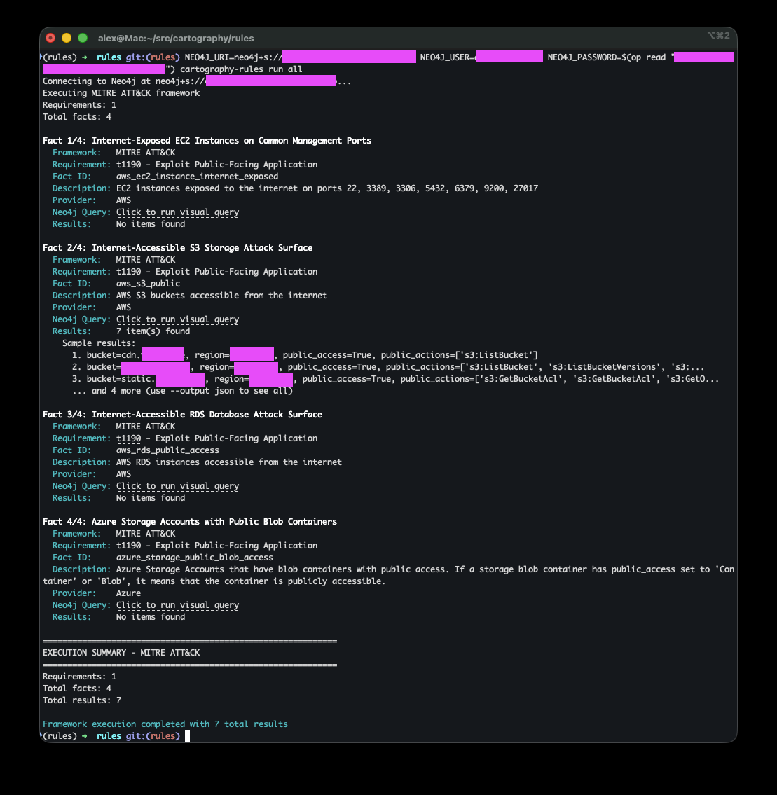
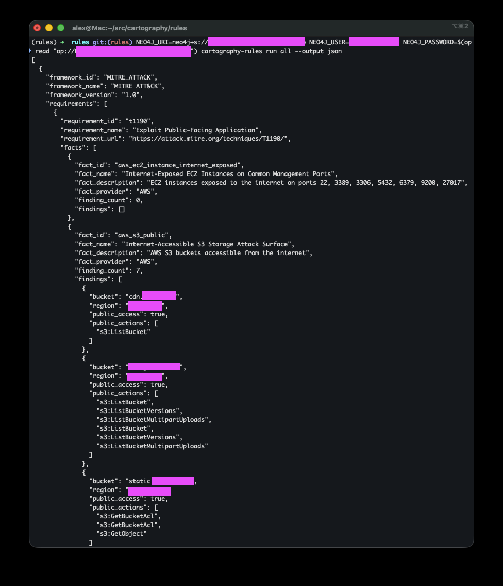

Cartography Rules¶
Cartography Rules is a query library for your Cartography graph.
With the cartography-rules CLI, you can:
Run pre-defined queries based on frameworks like MITRE ATT&CK
Explore and contribute community rules
Build custom queries for your own environment
Design¶
These rules are designed from an attacker’s perspective. For each framework technique, we ask: “What does an attacker actually need to execute this technique?”
The queries surface opportunities across the entire kill chain: initial access, lateral movement, privilege escalation, data exfiltration, persistence.
We don’t impose arbitrary thresholds like “no more than 5 admins” because every organization has different risk tolerances. Instead, we surface facts:
If a query returns no results, you’ve eliminated obvious attack paths for that technique.
If it returns findings, you now have a clear list of potential attacker targets.
Rationale¶
Security isn’t one-size-fits-all. For example, an EC2 security group open to the internet may be risky for some orgs even if it isn’t attached to an instance (someone could attach one later). For other orgs, that’s irrelevant noise.
Similarly, IAM roles trusted across multiple accounts or S3 buckets with public access may or may not be material risks depending on your use case.
Our goal is to surface facts in context so you can decide what matters for your environment.
Supported Rules¶
Currently rules cover:
You can list all available frameworks and techniques from the CLI, see below.
.. note:: Rules query against the existing Cartography graph. They don’t write data; they return findings you can view in text, JSON, or the Neo4j Browser.
Setup¶
Make sure you’ve run Cartography and have data in Neo4j.
Then configure your Neo4j connection:
export NEO4J_URI=bolt://localhost:7687 # or your Neo4j URI
export NEO4J_USER=neo4j # or your username
export NEO4J_DATABASE=neo4j # or your database name
# Store the Neo4j password in an environment variable. You can name this anything you want.
set +o history # avoid storing the password in the shell history; can also use something like 1password CLI.
export NEO4J_PASSWORD=password
set -o history # turn shell history back on
Quick start¶
List all frameworks
cartography-rules listList techniques for MITRE ATT&CK
cartography-rules list mitre-attackRun a specific technique
cartography-rules run mitre-attack t1190Sample output:
Fact 1/4: Internet-Exposed EC2 Instances on Common Management Ports Framework: MITRE ATT&CK Requirement: t1190 - Exploit Public-Facing Application Fact ID: aws_ec2_instance_internet_exposed Description: EC2 instances exposed to the internet on ports 22, 3389, 3306, 5432, 6379, 9200, 27017 Provider: AWS Neo4j Query: Click to run visual query Results: No items found Fact 2/4: Internet-Accessible S3 Storage Attack Surface Framework: MITRE ATT&CK Requirement: t1190 - Exploit Public-Facing Application Fact ID: aws_s3_public Description: AWS S3 buckets accessible from the internet Provider: AWS Neo4j Query: Click to run visual query Results: 7 item(s) found Sample results: 1. bucket=cdn.example.com, region=us-east-1, public_access=True, public_actions=['s3:ListBucket'] 2. bucket=mybucket.example.com, region=us-east-1, public_access=True, public_actions=['s3:ListBucket', 's3:ListBucketVersions', 's3:... 3. bucket=static.example.com, region=us-east-1, public_access=True, public_actions=['s3:GetBucketAcl', 's3:GetBucketAcl', 's3:GetO... ... and 4 more (use --output json to see all) ...
Usage¶
list¶
See available frameworks¶
cartography-rules list
See available requirements for a framework¶
cartography-rules list mitre-attack
See available facts for a requirement¶
cartography-rules list mitre-attack t1190
run¶
Run all frameworks in text mode¶
cartography-rules run all
# or
cartography-rules run all --output text

Run all frameworks in JSON mode¶
cartography-rules run all --output json

Run a specific framework¶
cartography-rules run mitre-attack
Run a specific requirement on a framework¶
cartography-rules run mitre-attack t1190
Run a specific fact on a requirement¶
cartography-rules run mitre-attack t1190 aws_rds_public_access
Authentication Options¶
Use a custom environment variable for the password:¶
cartography-rules run mitre-attack --neo4j-password-env-var MY_NEO4J_PASSWORD
Use interactive password prompt:¶
cartography-rules run mitre-attack --neo4j-password-prompt
Tab completion¶
Note that you can TAB complete. Install it with
cartography-rules --install-completion
and then restart your shell and then you can get TAB completion like:
cartography-rules run <TAB>
and then it will show you all the available frameworks.
Next steps¶
Explore the rules against your graph
Submit a pull request to contribute your own rules to the community; PRs welcome ❤️
Use JSON output to integrate this with your existing tools